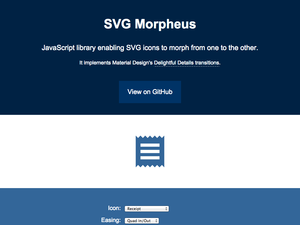

- SVG icons ftw
- Icon System with SVG Sprites
- Icon Fonts vs SVG
- Ten reasons we switched from an icon font to SVG
- SVG and icon-fonts the future of iconography
- Create an icon font illustrator icomoon
- Manipulating svg icons with simple css
- SVG symbol a Good Choice for Icons
- SVG use with External Source
- Cascading SVG Fill Color
- Customizable svg icons css variables
- Google Fundamentals - Use SVG as icons
- 150+ Free Animated SVG Icons
- Fontastic
- Useiconic
- Iconmelon
- SVGIcons

- Iconmonstr
- SVG ICONS SOCIAL
- SVG ICONS NewBancomail
- Material Design Icons By Google
- SVG Morpheus
- Payment Icons
- Loaders with just SVG
- Evil Icons
- An overview of svg sprite creation techiniques
- Making SVG buttons